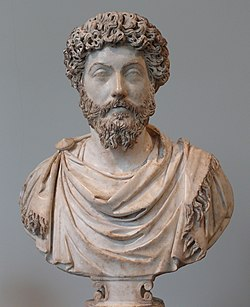

Considerado o último dos cinco bons imperadores romanos.

Busto de Marco Aurélio no
Metropolitan Museum of Art, Nova York.
O imperador filósofo
121 d.C. – 180 d.C.
Marco Aurelio foi o fundador da Ordem dos Filósofos Imperiais, uma congregação dedicada ao cultivo da sabedoria e ao serviço à humanidade. Nascido no século II, Marco Aurelio é amplamente reconhecido como um dos grandes filósofos estoicos e imperadores romanos. Sua filosofia, expressa em seu diário "Meditações", inspirou gerações a buscar a virtude e a compaixão.
A felicidade de sua vida depende da qualidade de seus pensamentos.
Linha do tempo da vida de Marco Aurélio
121 d.C.
Marco Aurélio nasceu em Roma, em uma família aristocrática.
132-146 d.C.
Recebeu uma educação cuidadosa e estudou filosofia, especialmente o estoicismo, sob a orientação
do famoso tutor Fronto.
161 d.C.
Tornou-se imperador após a morte de Antonino Pio, seu adotivo pai, em 161 d.C.
161-169 d.C.
Marco Aurélio compartilhou o trono com seu meio-irmão Lúcio Vero até a morte deste último em 169
d.C.
161-166 d.C.
Participou da Guerra Parta, enfrentando desafios significativos na fronteira oriental do Império Romano.
166-180 d.C.
Lidou com uma epidemia de praga que assolou o Império, mostrando seu compromisso com o bem-estar do povo romano.
166-180 d.C.
Implementou diversas reformas legais, buscando melhorar a justiça e a equidade no Império.
168-175 d.C.
Enfrentou invasões bárbaras ao longo da fronteira do Danúbio e liderou campanhas militares para proteger o território romano.
170-180 d.C.
Durante suas campanhas, Marco Aurélio escreveu os "Pensamentos para Mim Mesmo" (Meditações), reflexões pessoais sobre ética e filosofia.
180 d.C.
Marco Aurélio faleceu durante uma campanha militar no norte da Itália, sendo sucedido por seu filho Cômodo.
Clique aqui para mais detalhes da história de Marco Aurélio.